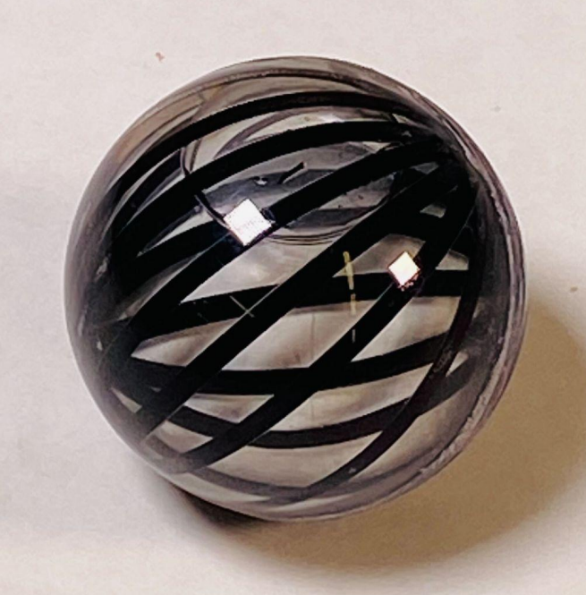
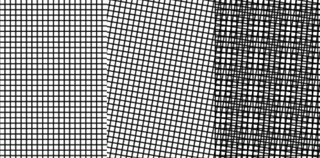
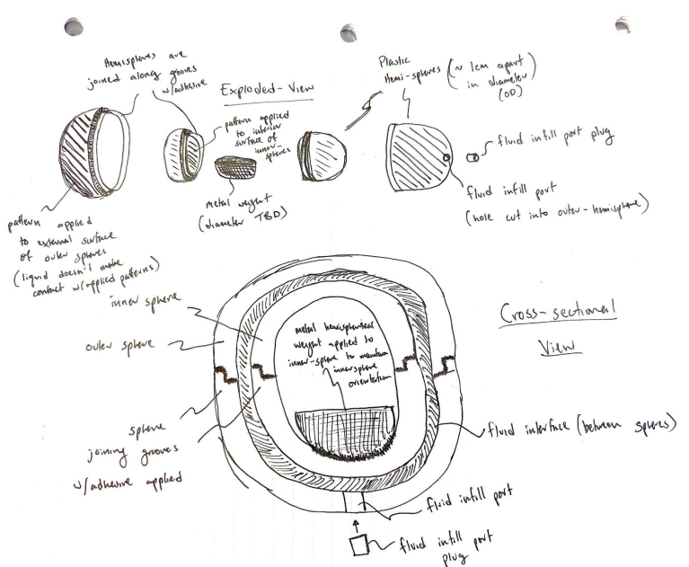
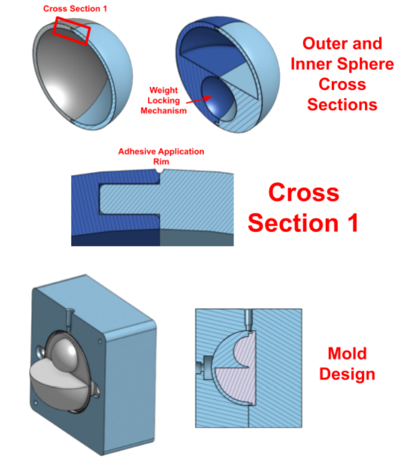
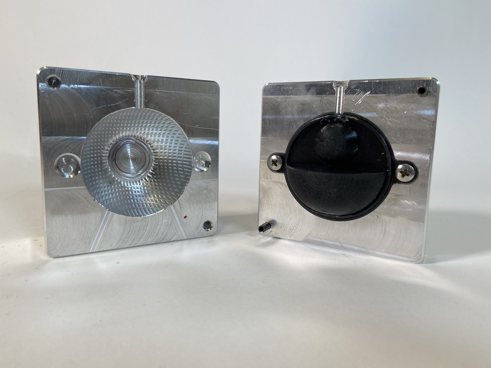
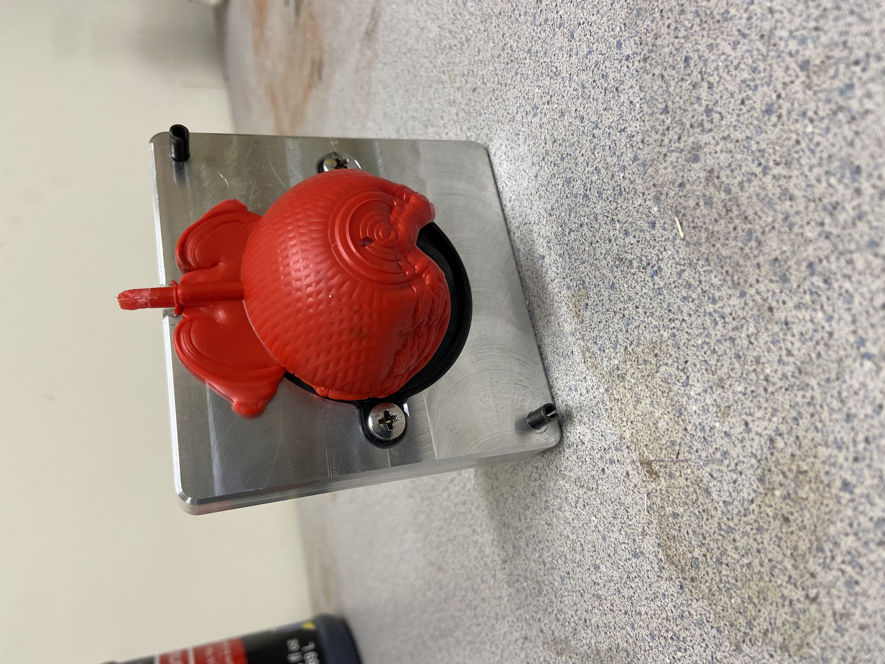
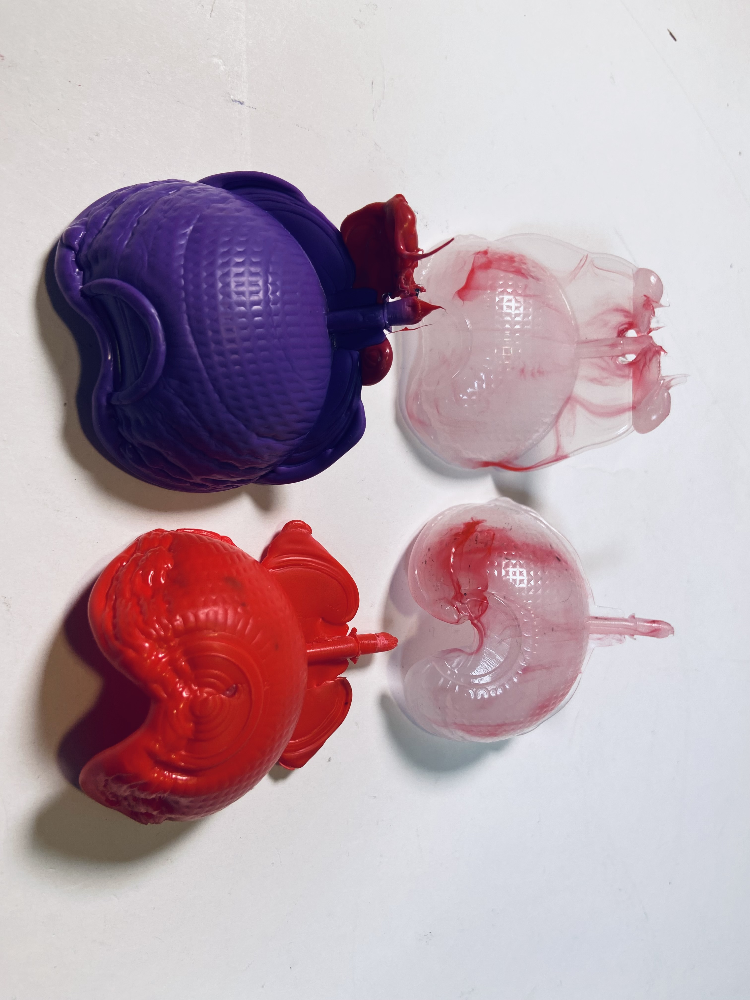

Senior Design: Kaleidosphere

In the fall of 2024 I took ME74: Senior Design Capstone at Tufts. My team — Tyler Pisinski, May Wildgrube, and I — worked with Professor James Intriligator to turn one of his concepts, which he called "Moiré Spheres," into an actual manufacturable toy. We ended up calling it the Kaleidosphere.
A moiré pattern is the shifting visual effect you get when two grids or line patterns overlap at an angle — think of two window screens stacked slightly askew. Professor Intriligator wanted to take that normally flat, 2D effect and put it on a sphere kids could hold and roll around, both as a fun toy and as a way to build spatial reasoning skills.

The Concept:
The trick to making a moiré pattern happen on a sphere you're holding is that you need two patterned surfaces moving relative to each other. Our solution was a sphere within a sphere: a weighted inner sphere that stays oriented one way due to gravity, floating inside a water-filled outer sphere that spins freely around it. Roll or rotate the toy, and the patterns on the two spheres slide past each other, creating a moving moiré effect.
Design Goals:
Since this was meant to be an actual sellable toy, we had real manufacturing targets to hit: under $3 in materials per unit, under half a pound, a 2-4 inch diameter that's comfortable for a kid's hands, and durable enough to survive a 75 N drop test. It also had to pass ASTM F963, the standard toy safety spec, and at least 9 out of 10 people needed to actually perceive the moiré effect when they picked it up.
Two Prototypes:
We built two very different versions. The first was a quick proof-of-concept made from clear plastic Christmas ornaments: we painted and weighted the inner sphere, taped on patterns with black vinyl, then sealed water between the two halves by assembling them fully submerged underwater. It was cheap and let us confirm the moiré effect actually worked, but it leaked, was entirely hand-assembled, and had no path to being manufactured at scale.


The second version was built around actual production: injection-molded spheres with a weight locking mechanism molded right in, and hydro-dipping (the same process used to put patterns on things like phone cases) instead of tape to apply the moiré patterns. We scored both designs against each other with a weighted decision matrix, and the injection-molded version won by a wide margin on durability, manufacturability, and safety.

The Final Design:
The production-intent design uses polycarbonate for both spheres — clear and tough enough to survive being dropped by a kid — with hydro-dipped patterns on the inner sphere's outside and the outer sphere's inside. The water between them does double duty: it keeps the inner sphere's weight-based orientation stable while letting the outer sphere spin around it almost frictionlessly.

Manufacturing Challenges:
Injection molding a sphere turned out to be a lot harder than we expected. Molten plastic doesn't flow evenly around a spherical cavity the way it does around simpler shapes, and our in-house equipment couldn't even reach the melting temperature polycarbonate needs, so we had to prototype in polypropylene instead — weaker and less clear than what the final product should actually use.


Even with that substitution, our molding attempts didn't produce usable parts by the end of the project.

If I picked this back up, the next steps would be running a proper CFD simulation of the mold flow, getting access to equipment that can actually reach polycarbonate temperatures, and redesigning the mold (probably with multiple injection points) to handle the sphere's geometry better.
Validation:
Without working injection-molded parts, we had to demo the earlier "Christmas Ornament" prototype at our Senior Design showcase. At the showcase, a professor's son picked up the toy and was completely absorbed by it — exactly the kind of reaction we were hoping the moiré effect would get out of a kid. It was a small sample size, but it was a good sign that the core idea behind the toy actually works.
Here's a short video summarizing the whole project:
The full final report, with all the engineering requirements, competitive benchmarking, and bill of materials, is below:
Open the full ME74 final report